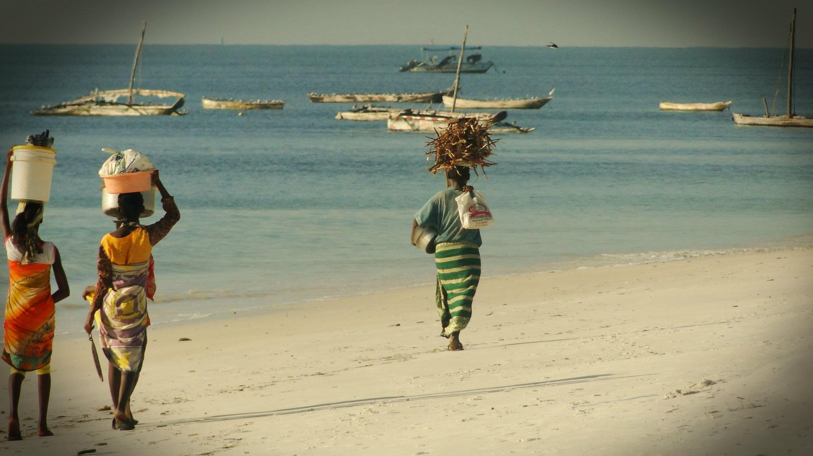

 The Swahili people (Swahili: WaSwahili) are a Bantu ethnic group inhabiting East Africa. Members of this ethnicity primarily reside on the Swahili coast, in an area encompassing the Zanzibar archipelago, littoral Kenya, the Tanzania seaboard, northern Mozambique, the Comoros Islands, and Northwest Madagascar. More recently, Swahili identity is centered around any person of African descent who speaks Swahili as their first language, is Muslim and lives in a town on the main urban centers of most of modern day Tanzania and coastal Kenya, northern Mozambique and the Comoros, through a process of swahilization